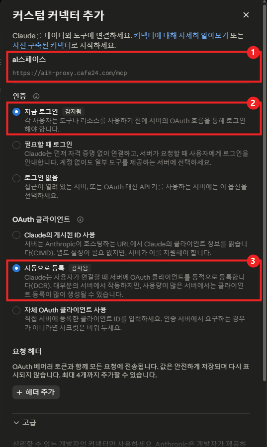

DAY 05수학의 힘 AI 교육특강
Claude로 만들고 AI SPACE로 배포하기
먼저 "프롬프트 역설계"로 1~4회차에 한 일을 되짚으며 AI에게 일을 맡기는 요청을 다듬습니다. 그 요청을 바탕으로 평가 피드백 업무를 입력·처리·출력으로 설계해 Claude로 "평가 피드백 도우미"를 만들고, 샘플로 테스트한 뒤 카페24 AI SPACE에 올려 내 인터넷 주소로 열어 봅니다.
1.오늘의 수업
학생 피드백·상담 준비처럼 반복 업무가 많은 원장님·강사님
프롬프트 역설계 → 설계하기 → Claude로 만들기 → 테스트 → AI SPACE에 올리기
원하는 결과를 먼저 그리고 요청을 다듬은 뒤, 그 요청을 내 학원 전용 업무 도구로 만들어 인터넷 주소로 열기
Claude (만들기) · 카페24 AI SPACE (인터넷에 올리기)
카페24 아이디·비밀번호 (지난 시간 숙제), Claude 로그인, 휴대폰
2.오늘 배우는 내용 & 전체 흐름
3.프롬프트 역설계 — 학원 업무편, 지금까지 배운 것을 한 번에
실습 · 진도에 맞춰 하고 싶은 만큼
- 결과를 읽고, 이 결과가 나오려면 무엇을 요청했어야 할지 생각합니다
- "내 프롬프트" 칸에 쓰고, Claude 새 채팅에 보내 봅니다
- 내 결과와 문제의 결과를 비교합니다 — 문장이 똑같을 필요는 없고, 빠진 요소가 없으면 됩니다
- 마지막에 예시 답안을 펼쳐 내 프롬프트와 비교합니다
예시 답안은 정답이 아니라 한 가지 예입니다. 문제는 진도에 맞춰 하고 싶은 만큼 풀면 됩니다.
오늘의 생각 훈련
1~4회차에 한 일을 역설계로 되짚습니다. 오늘은 한 걸음 더 — 사실과 판단을 나누고(AI는 근거, 판단은 선생님), AI가 지어낸 곳을 찾아내고, 마지막에는 매번 쓰는 요청을 '정해진 기준'으로 바꾸는 연습을 합니다. 이 마지막 문제가 오늘 만들 평가 피드백 도우미로 바로 이어집니다.
상황 — 중2 2학기 중간고사 시험지(20문항)를 Claude 프로젝트에 올리고 분석을 받았습니다.
AI가 만든 결과
| 단원 | 문항 번호 | 문항 수 | 비중 |
|---|---|---|---|
| 삼각형의 성질 | 1~4, 9~12, 17 | 9 | 45% |
| 사각형의 성질 | 5~8, 13~15, 18 | 8 | 40% |
| 도형의 닮음 | 16, 19, 20 | 3 | 15% |
이 결과가 나오도록 내 프롬프트를 써 보세요.
예시 프롬프트 (정답이 아니라 한 가지 예)
결과의 이 부분은 → 요청의 이 부분에서 나왔습니다
| 결과에서 보이는 것 | 요청에 들어 있던 것 |
|---|---|
| 단원별 표와 비중 | 정리 형식 지정 |
| "9 + 8 + 3 = 20" | 합계 확인 요청 |
| "근거만" + "최종 판단은 선생님" | 판단은 하지 말라는 조건 |
| 원문 대조가 필요한 번호 | 확인할 곳을 알려 달라는 요청 |
AI는 세고, 모으고, 정리하는 일을 잘합니다. 난이도처럼 판단이 필요한 일은 근거만 받고 선생님이 결정합니다. 이 구분이 요청에 들어가야 결과도 그렇게 나옵니다.
상황 — 학생 A(중2)의 시험 결과로 두 가지 피드백을 받았습니다. 점수 78점(지난번 65점), 틀린 문항 6·8·13·15번(사각형의 성질), 선생님 메모 "복합 조건 문제에서 시간이 오래 걸림".
AI가 만든 결과
이 결과가 나오도록 내 프롬프트를 써 보세요.
예시 프롬프트 (정답이 아니라 한 가지 예)
결과의 이 부분은 → 요청의 이 부분에서 나왔습니다
| 결과에서 보이는 것 | 요청에 들어 있던 것 |
|---|---|
| 학부모용 정중·5줄 / 학생용 친근·3줄 | 읽는 사람마다 말투와 길이 |
| 점수 변화 → 단원 → 계획 → 메모 순서 | 학부모 문자 순서 지정 |
| "조건에 밑줄 → 그림에 표시" | 학생에게 줄 방법 하나 요청 |
| 성격·태도 이야기가 없음 | 추측하지 말라는 조건 |
같은 결과라도 학부모는 "앞으로 어떻게 하실 건지", 학생은 "그래서 나는 뭘 하면 되는지"를 먼저 봅니다. 그리고 "추측하지 마"가 있어야 학생에 대한 근거 없는 평가가 빠집니다.
상황 — 학생 B의 자료로 학부모 문자를 받았는데, 자료와 다른 내용이 두 군데 있습니다.
학생 B 자료
학원: 바른수학학원 학년: 중2 / 이번 점수: 91점 / 지난 점수: 94점 틀린 문항: 9, 17번 / 취약 단원: 삼각형의 성질 선생님 메모: 고난도 문제에서 계산 실수
AI가 만든 결과
① 자료와 다른 곳 두 군데를 찾고 ② 다시 요청할 프롬프트를 써 보세요.
예시 프롬프트 (정답이 아니라 한 가지 예)
결과의 이 부분은 → 요청의 이 부분에서 나왔습니다
| 결과에서 보이는 것 | 요청에 들어 있던 것 |
|---|---|
| 틀린 곳 ① "3점 올랐습니다" (실제: 3점 내림) | 정확히 짚어서 고치기 |
| 틀린 곳 ② 집중력·수업 태도 (자료에 없음) | 지어낸 내용 빼기 |
| 점수가 내린 학생의 말투 | 격려로 시작하라는 조건 추가 |
| 같은 실수 막기 | 자료에 없는 평가는 넣지 않기 |
AI의 오류는 숫자의 방향(올랐다/내렸다)과 그럴듯한 학생 평가에 숨어 있습니다. 학부모에게 나가는 글은 보내기 전에 자료와 한 줄씩 대조합니다.
상황 — 피드백 문자를 학생마다 새로 부탁하면 말투와 내용이 매번 조금씩 달라집니다. 그래서 문장 틀(기준)을 미리 받아 두었습니다.
AI가 만든 결과
| 구간 | 상태 문장 |
|---|---|
| 90점 이상 | 이번 시험에서 안정적인 실력을 보여 주었습니다. |
| 70~89점 | 기본기는 잘 갖추었고, 몇 단원만 보완하면 됩니다. |
| 69점 이하 | 기본 개념부터 차근차근 다시 다지겠습니다. |
| 변화 | 첫 문장 |
|---|---|
| 올랐을 때 | 지난번보다 ○점 올랐습니다. |
| 내렸을 때 | 지난번보다 ○점 내렸지만, 보완할 부분이 분명합니다. |
| 같을 때 | 지난번과 같은 점수를 유지했습니다. |
이 결과가 나오도록 내 프롬프트를 써 보세요.
예시 프롬프트 (정답이 아니라 한 가지 예)
결과의 이 부분은 → 요청의 이 부분에서 나왔습니다
| 결과에서 보이는 것 | 요청에 들어 있던 것 |
|---|---|
| 구간 3개 × 문장 | 기준을 표로 만들어 달라는 요청 |
| 변화 3가지 | 오른 학생·내린 학생·같은 학생을 모두 생각함 |
| ○, [취약 단원] 자리 | 바뀌는 부분을 빈자리로 |
| 결과를 약속하지 않는 말 | 표현 조건 |
이 표가 바로 오늘 만들 도우미의 "처리 기준"입니다. 한 번 잘 정한 기준은 도구에 넣어 두면, 다음 학생부터는 요청하지 않아도 같은 품질로 나옵니다.
4.오늘 만들 것 — 입력 → 처리 → 출력
1회차에서 "시험 결과 피드백 문자"를 Claude에게 매번 부탁했습니다. 오늘은 그 일을 내 학원 전용 도구로 만듭니다. 만들기 전에 무엇을 넣고, 어떤 기준으로 정리해, 무엇을 받을지 먼저 정합니다.
- · 학생 표시 (학생 A)
- · 학년
- · 이번 점수 · 지난 점수
- · 틀린 문항
- · 취약 단원
- · 선생님 메모
- · 점수 변화 계산
- · 점수 구간별 상태 문장
- · 취약 단원으로 복습 계획
- · 선생님 메모 반영
- · 한 줄 상태 요약
- · 다음 2주 복습 계획
- · 학부모 문자 초안
- · 문자 복사 버튼
5.실습: Claude로 평가 피드백 도우미 만들기
실습 01
4번에서 정한 내용을 그대로 요청문에 담았습니다. 내 학원에 맞게 고친 뒤 Claude 새 채팅에 보내세요. 이 채팅에서 10번 배포까지 이어서 하니 채팅을 닫지 마세요. 아직 배포하지 않고 미리보기로 먼저 봅니다.
역설계 ④와 이어집니다 — 3번에서 받은 "평가 피드백 문장 틀"이 있다면, 요청문의 [처리 기준] 아래에 붙여 넣으세요. 내가 고른 문장 그대로 도우미에 들어갑니다.
AI는 만들 때만 씁니다
완성된 도우미는 AI 없이 혼자 돌아갑니다. 그래서 같은 점수를 넣으면 늘 같은 결과가 나오고, 학생 정보가 AI로 넘어가지 않으며, 쓸 때마다 드는 사용료도 없습니다. 이렇게 한 가지 업무를 정해진 기준대로 처리하는 도구를 업무 도우미(업무 에이전트)라고도 부릅니다.
6.실습: 샘플 A·B·C로 테스트하고 고치기
실습 02
한 명만 넣어 보고 끝내지 않습니다. 점수가 오른 학생, 내린 학생, 그대로인 학생을 넣어 봐야 빈틈이 보입니다. (수업용 가상 자료입니다.)
| 학생 | 학년 | 이번 / 지난 | 틀린 문항 | 취약 단원 | 선생님 메모 |
|---|---|---|---|---|---|
| 학생 A | 중2 | 78 / 65 ▲ | 6, 8, 13, 15번 | 사각형의 성질 | 복합 조건 문제에서 시간이 오래 걸림 |
| 학생 B | 중2 | 91 / 94 ▼ | 9, 17번 | 삼각형의 성질 | 고난도 문제에서 계산 실수 |
| 학생 C | 중2 | 63 / 63 = | 2, 3, 7, 9, 10, 16번 | 삼각형의 성질 | 기본 유형에서도 오답 반복 |
결과 확인
- 입력한 점수·단원이 그대로 나온다
- 점수가 내린 B에게도 문장이 부드럽다
- 점수가 같은 C를 어색하지 않게 표현한다
- 문자가 5줄을 넘지 않는다
- 복사 버튼이 잘 된다
- 휴대폰 크기에서도 보기 좋다
마음에 들지 않는 부분은 결과 문장을 손으로 고치지 말고 도구를 고쳐 달라고 합니다. 그래야 다음 학생부터 좋아집니다.
7.AI SPACE란? — 3회차와 비교해 보기
카페24 AI SPACE
AI로 만든 웹페이지·웹 도구를 서버를 몰라도 인터넷에 올려 주는 공간입니다. Claude에 한 번 연결해 두면, Claude에게 "배포해줘"라고 말하는 것만으로 내 인터넷 주소가 생깁니다.
화면을 그리고, 계산 규칙을 넣고, 고쳐 달라는 말을 알아듣습니다. 가게로 치면 인테리어 업자입니다.
만든 결과를 인터넷에 올려 두고 누구나 주소로 들어오게 합니다. 가게로 치면 점포 자리입니다. AI SPACE가 대신 생각해 주지는 않습니다.
| 3회차 (닷홈) | 오늘 (AI SPACE) | |
|---|---|---|
| 준비 | 회원가입 → 무료 호스팅 신청 → FTP 정보 확인 | 카페24 로그인 → 서비스 신청 → Claude에 연결 (처음 한 번) |
| 올리기 | 파일질라로 접속 → 파일을 끌어다 놓기 | Claude에게 "배포해줘" |
| 주소 | 아이디.dothome.co.kr | 아이디-프로젝트이름.mycafe24.ai |
| 고치기 | 파일을 고쳐서 다시 업로드 | "○○ 바꿔서 다시 배포해줘" |
| 올릴 수 있는 것 | 보여 주기만 하는 페이지 | 입력한 내용을 저장하는 웹 도구까지 |
3회차에 손으로 하던 일을, 오늘은 말 한 마디로 합니다.
8.실습: AI SPACE 신청하기
실습 03
- 1hosting.cafe24.com에서 AI SPACE 상품 페이지로 들어가 카페24 로그인 (지난 시간에 가입한 아이디)
- 2이용약관·개인정보 수집에 동의하고 서비스 신청 — 14일 무료 체험이 시작됩니다
- 3"AI 연결" 안내가 나오면 건너뛰어도 됩니다. 다음 실습에서 Claude 쪽에서 연결합니다
무료 체험, 이것만 알아 두세요
- · 카드 등록이 없고, 체험이 끝나도 자동으로 결제되지 않습니다.
- · 체험 공간은 1개입니다. 오늘 만들 도우미 하나를 여기에 올립니다.
- · 배포는 하루 5번까지(체험 기간 전체 30번)입니다. 미리보기로 충분히 고친 뒤에 "배포해줘"라고 하세요.
- · 체험이 끝나면 멈추고, 7일 뒤 데이터가 지워집니다. 계속 쓰려면 월 4,900원(1단계)부터 유료로 바꿀 수 있습니다.
※ 횟수·기간·요금은 이 자료를 만든 시점 기준입니다. 바뀔 수 있으니 신청 화면의 안내를 한 번 확인하세요.
9.실습: Claude에 AI SPACE 연결하기
실습 04
처음 한 번만 하면 됩니다. Claude가 내 AI SPACE에 파일을 올릴 수 있도록 연결 통로(커넥터)를 만들어 주는 과정입니다.
- 1claude.ai 왼쪽 아래 계정 아이콘 → 설정 → 커넥터
- 2커스텀 커넥터 추가를 누르고, 이름 칸에 AI SPACE, 주소 칸에 아래 주소를 붙여넣기
- 3설정 항목이 길게 나오는 화면이 열립니다. 아무것도 바꾸지 말고 맨 아래 추가를 누릅니다


"감지됨"은 Claude가 서버에 맞는 설정을 미리 찾아 골라 두었다는 뜻입니다. 요청 헤더는 추가하지 않고, 고급도 열지 않습니다.
- 4연결을 누르면 카페24 로그인 창이 열립니다. 로그인하면 연결 끝
- 5도우미를 만든 그 채팅으로 돌아가 입력창의 "+" → 커넥터 → AI SPACE 켜기 (2번에서 정한 이름)
- 6아래 문장을 보내 연결을 확인합니다
카페24 비밀번호는 Claude에 전달되지 않고, 따로 발급받을 열쇠(API 키)도 필요 없습니다. Claude 데스크톱 앱이라면 입력창 "+" → Connectors → Manage Connectors → Add custom connector에서 같은 주소를 넣습니다. 학원 공용 PC라면 수업 후 로그아웃하세요.
10.실습: "AI SPACE에 배포해줘"
실습 05
같은 채팅에서 이어서 보냅니다. 커넥터가 켜져 있는지 먼저 확인하세요.
받은 주소를 휴대폰 문자나 카카오톡 나에게 보내기로 보내 열어 보세요. 샘플 A를 넣어 한 번 더 써 봅니다.
"○○ 바꿔서 다시 배포해줘"라고 하면 같은 주소에 새 내용이 올라갑니다. 배포 횟수에 하루 제한이 있으니(수업 시점 기준 하루 5번) 한 번에 모아서 고치세요.
11.강사 시연: 반 전체 피드백 현황판
시연
대시보드 (현황판)
여러 결과를 한 화면에 모아 보는 요약판입니다. 도우미가 학생 한 명씩 처리한다면, 현황판은 반 전체를 봅니다. 입력한 내용을 저장해야 하므로 데이터 보관함(데이터베이스)을 함께 붙입니다.
| 학생 | 학년 | 점수 | 취약 단원 | 피드백 상태 |
|---|---|---|---|---|
| 학생 A | 중2 | 78 ▲13 | 사각형의 성질 | 완료 |
| 학생 B | 중2 | 91 ▼3 | 삼각형의 성질 | 완료 |
| 학생 C | 중2 | 63 = | 삼각형의 성질 | 확인 필요 |
현황판 예시 모습 — 실제 화면은 요청에 따라 달라집니다
강사가 아래 요청문으로 현황판을 만들어 배포하는 과정을 보여 드립니다. 체험 공간이 1개라 수업 중에는 따라 하지 않아도 되고, 체험 기간 안에 집에서 해 보셔도 좋습니다.
12.꼭 지킬 것 — 학생 정보와 공개 범위
배포한 주소는 주소를 아는 누구나 열 수 있습니다
- · 연습과 체험 단계에서는 실명·연락처·학교를 넣지 않습니다. 학생 A·B·C로만 씁니다.
- · 실제 학생 정보를 쓰는 일은 "로그인 기능 넣어줘" 한 마디로 끝나지 않습니다. 로그인 화면이 생기는 것과 실제로 안전한 것은 다릅니다. 로그인하지 않은 사람이 정말 열 수 없는지, 저장된 정보가 밖에서 보이지 않는지 직접 확인하고, 필요하면 전문가의 점검을 받은 뒤 사용합니다.
- · 체험이 끝나면 일정 기간 뒤 데이터가 지워집니다(수업 시점 기준 7일). 계속 쓸 자료라면 유료로 바꾸고 "백업해줘"로 보관합니다.
- · 점수 변화 계산
- · 정해진 기준으로 상태 문장 고르기
- · 복습 계획·문자 초안 정리
- · 반 전체 결과 모아 보여 주기
- · 학생의 실제 풀이 확인
- · 문자를 보내기 전 마지막 확인
- · 처리 기준(문장 틀) 정하기
- · 최종 지도 판단
13.실습: 나만의 업무 도구 설계서
실습 06
내 학원에서 반복되는 업무 하나로 설계서를 채웁니다. 다 쓰면 그대로 Claude에 붙이고 "이 설계대로 만들어서 미리보기로 보여줘"라고 하면 됩니다.
14.더 해 보기 (선택)
필수는 아닙니다. 시간이 남을 때나 체험 기간 안에 골라서 해 보세요.
추가 요청 3가지 클릭해서 펼치기 ▾접기 ▴
15.오늘의 결과물
16.오늘의 핵심 & 전체 과정 정리
핵심 — 좋은 도구는 좋은 요청에서 나옵니다. 무엇을 넣고 어떤 기준으로 무엇을 받을지 정하는 일은 선생님 몫이고, Claude는 만들고 AI SPACE는 올립니다.
5회차 전체 과정
| 회차 | 주제 | 흐름 |
|---|---|---|
| DAY 01 | AI 활용 기초와 학원 자료 분석 | 자료 올리기 → 찾기 → 분류 → 원문 대조 |
| DAY 02 | 시험지·기출문제 분석 | 문항 분석 → 난이도 → 출제 비중 → 지도 방향 |
| DAY 03 | 학원 홍보 랜딩페이지 | 기획 → 만들기 → 고치기 → 닷홈에 올리기 |
| DAY 04 | PPT·마케팅 콘텐츠 | 원본 정보 → PPT → 안내문·SNS (영상은 시연) |
| DAY 05 | Claude로 만들고 AI SPACE로 배포 | 역설계 → 설계 → 도우미 만들기 → 테스트 → 배포 |
새 기능보다, 목적과 기준
자료 정리, 기출 분석, 홍보 페이지, 홍보 콘텐츠, 그리고 오늘의 업무 도구까지 모두 같은 원리입니다. 학원 업무의 목적과 기준을 먼저 분명히 정하고, AI가 그 일을 돕도록 요청하세요. 오늘 만든 설계서로 다음 도구를 만들고, "배포해줘" 한 마디로 학원 안에서 함께 쓰면 됩니다.